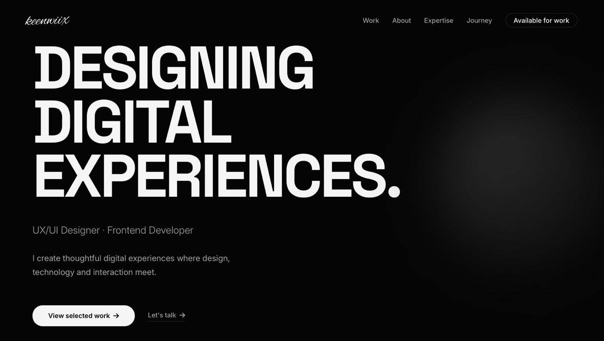

Portfolio Website
A personal portfolio built from scratch — designed, coded, and refined to showcase work with clarity and personality.
This is the very site you're looking at right now.

Project Overview
The portfolio you're reading right now. Designed and built from scratch — no templates, no frameworks. The goal was to create a site that feels premium, tells a clear story, and demonstrates both design and development skills.
Problem
Most portfolios look the same — generic templates, cluttered layouts, and no clear story. I wanted something that felt premium, minimal, and unique.
- Templates look generic and forgettable
- Cluttered layouts hurt readability
- No clear narrative for visitors
- Heavy frameworks hurt performance
Design Direction
I chose a premium monochrome palette, editorial typography, and generous whitespace — inspired by leading digital studios and independent designers.
Monochrome Palette
Black, white, and shades of gray
Editorial Type
Space Grotesk + Inter
Asymmetric Grid
Editorial layouts, not symmetric cards
Subtle Motion
Purposeful, never distracting
Design Principles
- Content first, decoration second
- Typography as the primary visual
- Motion must serve the experience
- Performance is a feature
Process
Research & Moodboard
Collected references from leading design studios and portfolios.
Wireframes
Mapped the narrative flow: hero → work → about → contact.
Visual Design
Designed the full system in Figma with tokens and components.
Development
Built in pure HTML/CSS/JS with focus on performance and accessibility.
Refinement
Iterated based on feedback, tested across devices, optimized for Lighthouse.
Solution
A minimal, editorial-style portfolio that puts the work and story first — while demonstrating both design and frontend skills.
Fast by Default
No frameworks, no bloat — pure HTML, CSS, JS
Fully Responsive
Beautiful on every device from 320px to 4K
Accessible
Semantic HTML, focus states, reduced-motion support
SEO Ready
Meta tags, Open Graph, sitemap, semantic structure
Results
"A portfolio that feels like a product — not a template."— Feedback from peers
Lessons Learned
- Constraints breed creativity
- Minimalism is harder than complexity
- Motion should always serve clarity
- Performance is part of design